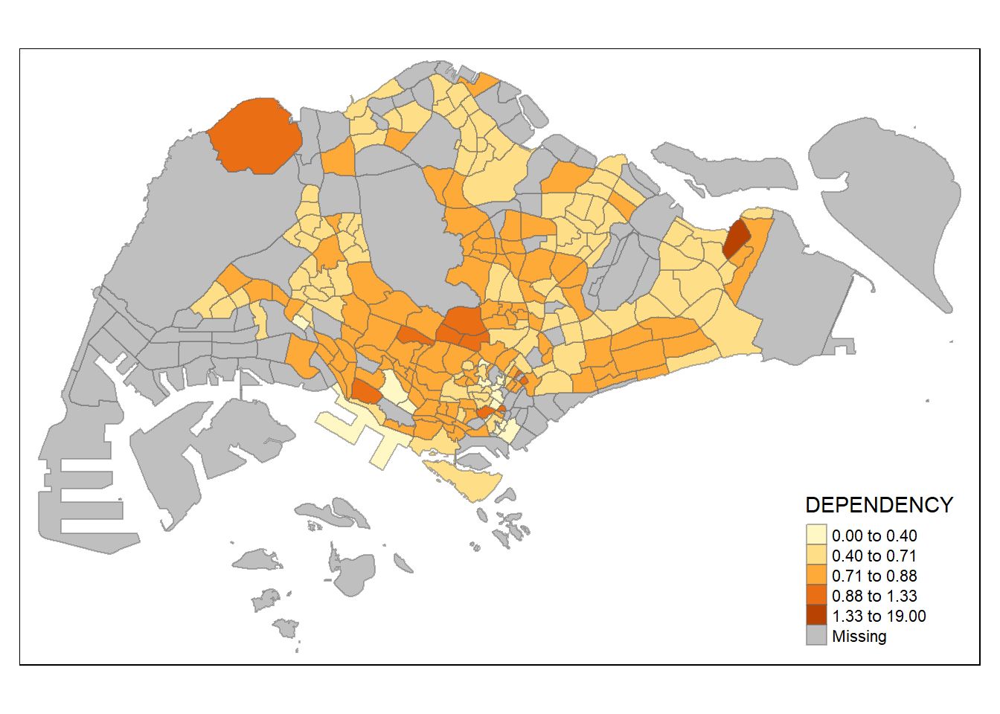
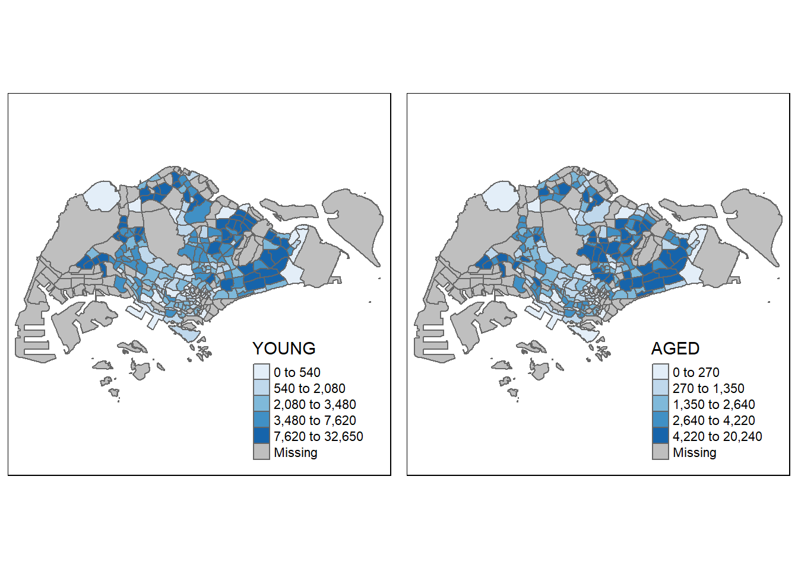

pacman::p_load(sf, tidyverse, tmap)Hands-on Exercise 1: Choropleth Mapping with R
Overview
Choropleth mapping involves the symbolisation of enumeration units, such as countries, provinces, states, counties or census units, using area patterns or graduated colors. For example, a social scientist may need to use a choropleth map to portray the spatial distribution of aged population of Singapore by Master Plan 2014 Subzone Boundary.
This can be done using the tmap package. We can load this and other required packages (sf, tidyverse) using the code below.
Importing Data into R
The Data
Two datasets will be used:
- Master Plan 2014 Subzone Boundary (Web) in ESRI shapefile format. It consists of geographical boundary of Singapore at the planning subzone level and is babsed on the URA Master Plan 2014.
- Singapore Residents by Planning Area/Subzone, Age Grouu, Sex, and Type of Dwelling, June 2011-2020 csv format. This is aspatial data. Its PA and SZ fields can be used to geocode to the Master Plan 2014 Subzone Boundary (Web) shapefile.
Importing Geospatial Data into R
st_read() can be used to read the Master Plan 2014 shapefile into an R dataframe.
mpsz <- st_read(dsn = 'data/geospatial',
layer = 'MP14_SUBZONE_WEB_PL')Reading layer `MP14_SUBZONE_WEB_PL' from data source
`D:\phlong2023\ISSS624\Hands-on_Ex\Hands-on_Ex1\data\geospatial'
using driver `ESRI Shapefile'
Simple feature collection with 323 features and 15 fields
Geometry type: MULTIPOLYGON
Dimension: XY
Bounding box: xmin: 2667.538 ymin: 15748.72 xmax: 56396.44 ymax: 50256.33
Projected CRS: SVY21glimpse() and head() can be used to look at the data types and first few rows of data
glimpse(mpsz)Rows: 323
Columns: 16
$ OBJECTID <int> 1, 2, 3, 4, 5, 6, 7, 8, 9, 10, 11, 12, 13, 14, 15, 16, 17, …
$ SUBZONE_NO <int> 1, 1, 3, 8, 3, 7, 9, 2, 13, 7, 12, 6, 1, 5, 1, 1, 3, 2, 2, …
$ SUBZONE_N <chr> "MARINA SOUTH", "PEARL'S HILL", "BOAT QUAY", "HENDERSON HIL…
$ SUBZONE_C <chr> "MSSZ01", "OTSZ01", "SRSZ03", "BMSZ08", "BMSZ03", "BMSZ07",…
$ CA_IND <chr> "Y", "Y", "Y", "N", "N", "N", "N", "Y", "N", "N", "N", "N",…
$ PLN_AREA_N <chr> "MARINA SOUTH", "OUTRAM", "SINGAPORE RIVER", "BUKIT MERAH",…
$ PLN_AREA_C <chr> "MS", "OT", "SR", "BM", "BM", "BM", "BM", "SR", "QT", "QT",…
$ REGION_N <chr> "CENTRAL REGION", "CENTRAL REGION", "CENTRAL REGION", "CENT…
$ REGION_C <chr> "CR", "CR", "CR", "CR", "CR", "CR", "CR", "CR", "CR", "CR",…
$ INC_CRC <chr> "5ED7EB253F99252E", "8C7149B9EB32EEFC", "C35FEFF02B13E0E5",…
$ FMEL_UPD_D <date> 2014-12-05, 2014-12-05, 2014-12-05, 2014-12-05, 2014-12-05…
$ X_ADDR <dbl> 31595.84, 28679.06, 29654.96, 26782.83, 26201.96, 25358.82,…
$ Y_ADDR <dbl> 29220.19, 29782.05, 29974.66, 29933.77, 30005.70, 29991.38,…
$ SHAPE_Leng <dbl> 5267.381, 3506.107, 1740.926, 3313.625, 2825.594, 4428.913,…
$ SHAPE_Area <dbl> 1630379.27, 559816.25, 160807.50, 595428.89, 387429.44, 103…
$ geometry <MULTIPOLYGON [m]> MULTIPOLYGON (((31495.56 30..., MULTIPOLYGON (…head(mpsz, 5)Simple feature collection with 5 features and 15 fields
Geometry type: MULTIPOLYGON
Dimension: XY
Bounding box: xmin: 25867.68 ymin: 28369.47 xmax: 32362.39 ymax: 30435.54
Projected CRS: SVY21
OBJECTID SUBZONE_NO SUBZONE_N SUBZONE_C CA_IND PLN_AREA_N
1 1 1 MARINA SOUTH MSSZ01 Y MARINA SOUTH
2 2 1 PEARL'S HILL OTSZ01 Y OUTRAM
3 3 3 BOAT QUAY SRSZ03 Y SINGAPORE RIVER
4 4 8 HENDERSON HILL BMSZ08 N BUKIT MERAH
5 5 3 REDHILL BMSZ03 N BUKIT MERAH
PLN_AREA_C REGION_N REGION_C INC_CRC FMEL_UPD_D X_ADDR
1 MS CENTRAL REGION CR 5ED7EB253F99252E 2014-12-05 31595.84
2 OT CENTRAL REGION CR 8C7149B9EB32EEFC 2014-12-05 28679.06
3 SR CENTRAL REGION CR C35FEFF02B13E0E5 2014-12-05 29654.96
4 BM CENTRAL REGION CR 3775D82C5DDBEFBD 2014-12-05 26782.83
5 BM CENTRAL REGION CR 85D9ABEF0A40678F 2014-12-05 26201.96
Y_ADDR SHAPE_Leng SHAPE_Area geometry
1 29220.19 5267.381 1630379.3 MULTIPOLYGON (((31495.56 30...
2 29782.05 3506.107 559816.2 MULTIPOLYGON (((29092.28 30...
3 29974.66 1740.926 160807.5 MULTIPOLYGON (((29932.33 29...
4 29933.77 3313.625 595428.9 MULTIPOLYGON (((27131.28 30...
5 30005.70 2825.594 387429.4 MULTIPOLYGON (((26451.03 30...Importing Attribute Data into R
For the resident population data, read_csv() will be used as it is stored as a csv
popdata <- read_csv('data/aspatial/respopagesexfa2011to2020.csv')Rows: 738492 Columns: 7
── Column specification ────────────────────────────────────────────────────────
Delimiter: ","
chr (5): PA, SZ, AG, Sex, FA
dbl (2): Pop, Time
ℹ Use `spec()` to retrieve the full column specification for this data.
ℹ Specify the column types or set `show_col_types = FALSE` to quiet this message.Data Preparation
Before a thematic map can be prepared, you are required to prepare a data table with year 2020 values. The data table should include the variables PA, SZ, YOUNG, ECONOMY ACTIVE, AGED, TOTAL, DEPENDENCY.
This table would have the rows be each unique PA and SZ and with the following new columns:
- YOUNG: number of people from age group 0-4 to age group 20-24
- ECONOMY ACTIVE: number of people from age group 25-29 to age group 60-64
- AGED: number of people age group 65 +
- TOTAL: number of people in all age groups
- DEPENDENCY: the ratio between YOUNG + AGED against ECONOMY ACTIVE
Data Wrangling
The following data wrangling and transformation functions will be used:
- pivot_wider(): To pivot the dataframe from long to wide format with rows becoming new columns
- mutate(), filter(), and group_by(): Creating new columns, filtering, and group columns based on value of some columns
popdata2020 <- popdata %>%
filter(Time == 2020) %>% #Getting only 2020 data
group_by(PA, SZ, AG) %>%
summarise(`POP` = sum(`Pop`)) %>% #Summarizing by population based on the group_by
ungroup() %>%
pivot_wider(names_from = AG,
values_from = POP)%>% #pivot wider based on names in AG and values from POP
mutate(YOUNG = rowSums(.[3:6])+rowSums(.[14])) %>%
mutate(`ECONOMY ACTIVE` = rowSums(.[7:13])+rowSums(.[15]))%>%
mutate(`AGED` = rowSums(.[16:21])) %>%
mutate(`TOTAL` = rowSums(.[3:21])) %>%
mutate(`DEPENDENCY` = (`YOUNG` + `AGED`)/`ECONOMY ACTIVE`) %>%
select(`PA`, `SZ`, `YOUNG`, `ECONOMY ACTIVE`, `AGED`, `TOTAL`, `DEPENDENCY`)`summarise()` has grouped output by 'PA', 'SZ'. You can override using the
`.groups` argument.Joining the attribute data and geospatial data
Currently, the values of the PA and SZ fields are a mix of lower and uppercase characters while the values in SUBZONE_N and PLN_AREA_N are all uppercase.
We need to convert the values in PA and SZ fields to uppercase.
popdata2020 <- popdata2020 %>%
mutate_at(.vars = vars(PA, SZ), #Apply the toupper function to multiple columns
.funs = list(toupper)) %>%
filter(`ECONOMY ACTIVE` > 0)left_join() can then be used to join the geographical data and attribute table based on SZ being the same as SUBZONE_N. left_join() is used with the simple feature dataframe (mpsz) as the left data table to ensure the output will be a simple features dataframe; it will also keep all observations in mpsz.
mpsz_pop2020 <- left_join(mpsz, popdata2020,
by = c('SUBZONE_N' = 'SZ'))Now, we can use write_rds to create a new rds (R Data Serialization) file with the new dataframe
write_rds(mpsz_pop2020, 'data/rds/mpszpop2020.rds')Choropleth Mapping Geospatial Data using tmap
Plotting a choropleth map quickly by using qtm()
Default visualization using qtm(). Note that tmap_mode() with “plot” is used to produce a static map. For interactive mode, “view” should be used.
tmap_mode('plot')tmap mode set to plottingqtm(mpsz_pop2020,
fill = 'DEPENDENCY') #the DEPENDENCY column will be used for the color variation
Creating a choropleth map by using tmap’s elements
Despite its usefulness of drawing a choropleth map quickly and easily, the disadvantge of qtm() is that it makes aesthetics of individual layers harder to control. To draw a high quality cartographic choropleth map as shown in the figure below, tmap’s drawing elements should be used.
tm_shape(mpsz_pop2020)+
tm_fill('DEPENDENCY',
style='quantile',
palette = 'Blues',
title = 'Dependency ration')+
tm_layout(main.title = 'Distribution of Dependency Ratio by planning subzone',
main.title.position = 'center',
main.title.size = 1.2,
legend.height = 0.45,
legend.width = 0.35,
frame = TRUE)+
tm_borders(alpha = 0.5)+
tm_compass(type='8star',size=2)+
tm_scale_bar()+
tm_grid(alpha = 0.2)+
tm_credits('Sourrce: Planning Sub-zone boundary from Urban Redevelopment Authority \n and Population data from Department of Statistics (DOS)',
position = c('left','bottom'))The following sections will explain each step of the process executed in the code chunk above
Drawing a base map
The basic building block of tmap is tm_shape() which is used to define the input data and tm_polygons() which is used to draw the planning subzone polygons.
tm_shape(mpsz_pop2020)+
tm_polygons()
Drawing a choropleth map using tm_polygons()
tm_polygons() can be modified with the target variable in order to draw the choropleth map showing the geographical distribution of the selected variable.
tm_shape(mpsz_pop2020)+
tm_polygons('DEPENDENCY')
Things to learn from tm_polygons():
The default interval binning used to draw the choropleth map is called “pretty”.
The default colour scheme used is
YlOrRdof ColorBrewer.By default, Missing value will be shaded in grey.
Drawing a choropleth map using tm_fill() and tm_border()
tm_polygons() is a wrapper of tm_fill() and tm_border():
- tm_fill() shades the polygons by using the default colour scheme
- tm_borders() adds the borders of the shapefile onto the choropleth map
If you use tm_fill() alone, there will be no border between the subzones. The planning subzones are shared according to the respective dependency values.
tm_shape(mpsz_pop2020)+
tm_fill('DEPENDENCY')
tm_borders() can be used to add the boundary of the planning subzones. tm_borders() has three arguments:
alpha: transparency of the line
col: border colour
lwd: line width
lty: line type
tm_shape(mpsz_pop2020)+
tm_fill('DEPENDENCY')+
tm_borders(lwd = 0.1, alpha = 1)
Data classification methods of tmap
Most choropleth maps employ some methods of data classification. The point of classification is to take a large number of observations and group them into data ranges or classes.
tmap provides a total ten data classification methods, namely: fixed, sd, equal, pretty (default), quantile, kmeans, hclust, bclust, fisher, and jenks.
To define a data classification method, the style argument of tm_fill() or tm_polygons() will be used.
Plotting choropleth maps with built-in classification methods
jenks data classification method
tm_shape(mpsz_pop2020)+
tm_fill('DEPENDENCY',
n = 5, #number of classes
style = 'jenks')+
tm_borders(alpha = 0.5)
equal data classification method
tm_shape(mpsz_pop2020)+
tm_fill('DEPENDENCY',
n = 5,
style = 'equal')+
tm_borders(alpha = 0.5)
quantile data classification method
tm_shape(mpsz_pop2020)+
tm_fill('DEPENDENCY',
n = 5,
style = 'quantile')+
tm_borders(alpha = 0.5)The distribution of quantile data classification method are more evenly distributed then equal data classification method.
Using the quantile style with different numbers of classes
2 classes
tm_shape(mpsz_pop2020)+
tm_fill('DEPENDENCY',
n = 2,
style = 'quantile')+
tm_borders(alpha = 0.5)6 classes
tm_shape(mpsz_pop2020)+
tm_fill('DEPENDENCY',
n = 6,
style = 'quantile')+
tm_borders(alpha = 0.5)10 classes
tm_shape(mpsz_pop2020)+
tm_fill('DEPENDENCY',
n = 10,
style = 'quantile')+
tm_borders(alpha = 0.5)Plotting choropleth map with custom break
For all the built-in styles, the category breaks are computed internally. In order to override these defaults, the breakpoints can be set explicitly by means of the breaks argument to the tm_fill(). It is important to note that, in tmap the breaks include a minimum and maximum. As a result, in order to end up with n categories, n+1 elements must be specified in the breaks option (the values must be in increasing order).
summary() can be used to get some descriptive statistics on the variable ‘DEPENDENCY’ before setting break points.
summary(mpsz_pop2020$DEPENDENCY) Min. 1st Qu. Median Mean 3rd Qu. Max. NA's
0.0000 0.6540 0.7063 0.7712 0.7657 19.0000 92 With reference to the results above and the need to include a minimum and maximum (0 and 100), we can set our breaks with the vector c(0, 0.5, 0.6, 0.7, 0.8, 1.00)
Now we can plot the choropleth map with custom breaks
tm_shape(mpsz_pop2020)+
tm_fill('DEPENDENCY',
breaks = c(0, 0.5, 0.6, 0.7, 0.8, 1.00))+
tm_borders(alpha = 0.5)Warning: Values have found that are higher than the highest breakColour Scheme
tmap supports colour ramps either defined by the user or a set of predefined colour ramps from the RColorBrewer package
Using ColourBrewer palette
To change the colour, we assigned the preferred colour to the palette argument of tm_fill()
tm_shape(mpsz_pop2020)+
tm_fill('DEPENDENCY',
n = 6,
style = 'quantile',
palette = 'Blues')+
tm_borders(alpha = 0.5)
We can also reverse the color scheme (darker for lower values) by adding a ‘-’ prefix to the palette argument
tm_shape(mpsz_pop2020)+
tm_fill('DEPENDENCY',
n = 6,
style = 'quantile',
palette = '-Blues')+
tm_borders(alpha = 0.5)Map Layouts
Map layout refers to the combination of all map elements into a cohensive map. Map elements include among others the objects to be mapped, the title, the scale bar, the compass, margins and aspects ratios. Colour settings and data classification methods covered in the previous section relate to the palette and break-points are used to affect how the map looks.
Map Legend
In tmap, several legend options are provided to change the placement, format and appearance of the legend.
tm_shape(mpsz_pop2020)+
tm_fill('DEPENDENCY',
style = 'jenks',
palette = 'Blues',
legend.hist = TRUE,
legend.is.portrait = TRUE,
legend.hist.z = 0.1)+
tm_layout(main.title = 'Distribution of Dependency Ratio by planning subzone \n (Jenks Classification)',
main.title.position = 'center',
main.title.size = 1,
legend.height = 0.45,
legend.width = 0.35,
legend.outside = FALSE,
legend.position = c('right','bottom'),
frame = FALSE)+
tm_borders(alpha = 0.5)Map Style
tmap allows a wide variety of layout settings to be changes. They can be called by using tmap_style()
tm_shape(mpsz_pop2020)+
tm_fill('DEPENDENCY',
style = 'quantile',
palette = '-Greens')+
tm_borders(alpha = 0.5)+
tmap_style('classic')tmap style set to "classic"other available styles are: "white", "gray", "natural", "cobalt", "col_blind", "albatross", "beaver", "bw", "watercolor" 
Cartographic Furniture
Beside map style, tmap also also provides arguments to draw other map furniture such as compass, scale bar and grid lines.
tm_compass() can be used to add a compass.
tm_scale_bar() can be used to add a scale bar.
tm_grid() can be used to add grid lines.
tm_shape(mpsz_pop2020)+
tm_fill('DEPENDENCY',
style = 'quantile',
palette = 'Blues',
title = 'No. of persons')+
tm_layout(main.title = 'Distribution of Dependency Ratio by planning subzone \n (Jenks Classification)',
main.title.position = 'center',
main.title.size = 1.2,
legend.height = 0.45,
legend.width = 0.35,
frame = TRUE)+
tm_borders(alpha = 0.5)+
tm_compass(type = '8star', size = 2)+
tm_scale_bar(width = 0.15)+
tm_grid(lwd = 0.1, alpha = 0.2)+
tm_credits('Source: Planning Sub-zone boundary from Urban Redevelopment Authority (URA) \n and Population data from Department of Statistic (DOS)',
position = c('left','bottom'))To reset to the default style, use tmap_style(‘white’)
tmap_style('white')tmap style set to "white"other available styles are: "gray", "natural", "cobalt", "col_blind", "albatross", "beaver", "bw", "classic", "watercolor" Drawing Small Multiple Choropleth Maps
Small multiple maps, also referred to as facet maps, are composed of many maps arrange side-by-side, and sometimes stacked vertically. Small multiple maps enable the visualisation of how spatial relationships change with respect to another variable, such as time.
In tmap, small multiple maps can be plotted in three ways:
- by assigning multiple values to at least one of the aesthetic arguments
- by defining a group-by variable in tm_facets()
- by creating multiple standalone maps with tmap_arrange()
By assigning multiple values to at least one of the aesthetic arguments
The ncols argument in tm_fill() can be used to make multiple choropleth maps
tm_shape(mpsz_pop2020)+
tm_fill(c('YOUNG','AGED'),
style = 'equal',
palette = 'Blues')+
tm_layout(legend.position = c('right','bottom'))+
tm_borders(alpha = 0.5)+
tmap_style('white')tmap style set to "white"other available styles are: "gray", "natural", "cobalt", "col_blind", "albatross", "beaver", "bw", "classic", "watercolor" 
tm_shape(mpsz_pop2020)+
tm_polygons(c('DEPENDENCY','AGED'),
style = c('equal','quantile'),
palette = list('Blues','Greens'))+
tm_layout(legend.position = c('right','bottom'))
By defining a group-by variable in tm_facets()
tm_shape(mpsz_pop2020)+
tm_fill('DEPENDENCY',
style = 'quantile',
palette = 'Blues',
thres.poly = 0)+
tm_facets(by = 'REGION_N',
free.coords = TRUE,
drop.shapes = TRUE)+
tm_layout(legend.show = FALSE,
title.position = c('center','center'),
title.size = 20)+
tm_borders(alpha = 0.5)Warning: The argument drop.shapes has been renamed to drop.units, and is
therefore deprecated
By creating multiple stand-alone maps with tmap_arrange()
youngmap <- tm_shape(mpsz_pop2020)+
tm_polygons('YOUNG',
style = 'quantile',
palette = 'Blues')
agedmap <- tm_shape(mpsz_pop2020)+
tm_polygons('AGED',
style = 'quantile',
palette = 'Blues')
tmap_arrange(youngmap, agedmap, asp = 1, ncol = 2)
Mapping Spatial Object Meeting a Selection Criterion
Selection function can be used to map spatial objects meeting the selection criterion
tm_shape(mpsz_pop2020[mpsz_pop2020$REGION_N=='CENTRAL REGION',])+
tm_fill('DEPENDENCY',
style = 'quantile',
palette = 'Blues',
legend.hist = TRUE,
legend.is.portrait = TRUE,
legend.hist.z = 0.1)+
tm_layout(legend.outside = TRUE,
legend.height = 0.45,
legend.width = 5.0,
legend.position = c('right','bottom'),
frame = FALSE)+
tm_borders(alpha = 0.5)Warning in pre_process_gt(x, interactive = interactive, orig_crs =
gm$shape.orig_crs): legend.width controls the width of the legend within a map.
Please use legend.outside.size to control the width of the outside legend